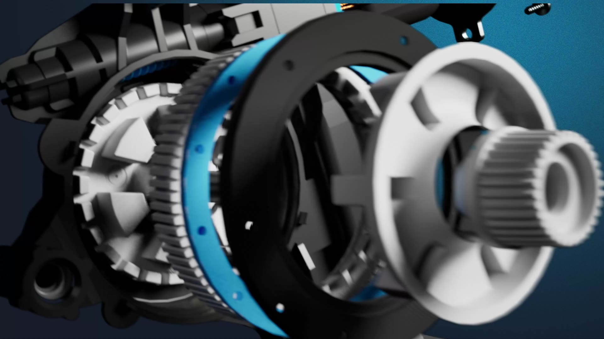

The Plunge
Travel beneath the sea for your first day as a fish feeder. A VR team project in Unity where I handled programming and world design.
- RoleProgramming & design
- EngineUnity
- PlatformVR
Playthrough
The whole experience, from the first descent to repairing the generator. About five and a half minutes, with sound.
Elevator
Custom stops on the linear drive send the pod to set floors, with a smooth Y-only move between them.
- C#
- Linear drive
Floor objectives
Unity Events chain each floor’s task: feeding the fish, fixing the pipes, then repairing the generator.
- Unity Events
- Timeline
Environment
One ravine-shaped corridor gives the pod window depth and guides where you look.
- Level design
- Composition
Ecosystem
Creatures swim on spline paths, and a customizable fish shader keeps every school different.
- Splines
- Shader Graph
Post-processing
A vibrant global volume for the open water, and a darker, murky one for the depths.
- Post-process volumes
- Bloom
Lighting
Exponential squared fog, an underwater HDRI skybox and a few placed spotlights.
- Fog
- Skybox
- Spotlights
